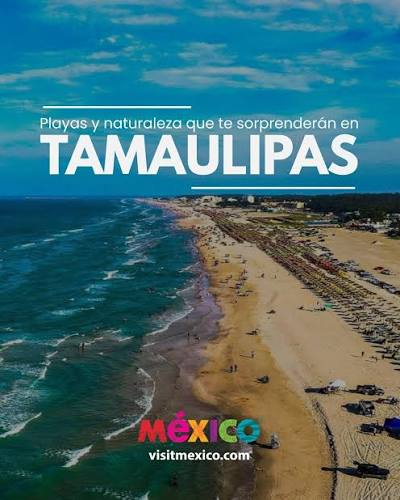

Fiesta Nuevas Emociones
Desde el al , en Ciudad Victoria ven a vivir la emoción de la Feria Tamaulipas edición 2026!
Mas info en: Feria El Entusiasta

Tamaulipas, oficialmente Estado Libre y Soberano de Tamaulipas, es uno de los treinta y un estados que, junto con la Ciudad de México, forman México. Su capital es Ciudad Victoria y su ciudad más poblada es Reynosa. Fue fundado el 7 de febrero de 1824 a partir del territorio de la antigua provincia de Nuevo Santander.
Ubicada en el norte del país, con limitaciones al norte con el río Bravo que lo separa de Estados Unidos. Al este con el golfo de México, al sur con Veracruz y al suroeste con San Luis Potosí y al Oeste con Nuevo León.
Aqui puedes disfrutar de hermosas playas, visitar reservas naturales protegidas y para los turistas más curiosos tienes la posibilidad de visitar pueblos ricos en historia.
Tambien cuenta con un destino costero donde el río se une con el mar ideal para viajes en familia. O también puedes visitar la Reserva de la Biósfera El Cielo para una salida de amigos donde puedes realizar senderismo o rapel!
Tamaulipas ofrece una combinación de naturaleza, cultura y gastronomía. Podés recorrer sus playas, además de disfrutar de opciones de ecoturismo, cultura y gastronomía. En reservas naturales del estado es posible hacer camping, kayak, ciclismo de montaña, rappel, tirolesa, esnórquel y senderismo.
Sus ciudades combinan historia y vida urbana: en algunas, el centro histórico conserva arquitectura influenciada por el art nouveau y estilos afrancesados, mientras que otras ofrecen paseos en bote por lagunas donde se pueden avistar aves, iguanas y cocodrilos.
La gastronomía es otro punto fuerte: en la zona costera predominan platos con jaibas preparadas de distintas formas, mientras que en otras ciudades la oferta culinaria es amplia y moderna, con productos cultivados en regiones cercanas.
Actualmente contamos con una renovada zona turistica y renovados parques para el ocio tanto de turistas como de residentes locales. Fuimos elegidos como la ciudad mas limpia de Argentina!
También, ampliamos la zona horaria de seguridad total para mantener a nuestros ciudadanos y turistas seguros en su estadia. Además, se construyeron nuevos aparcamientos con tarifas accesibles para que puedas tener tu auto seguro y al alcance en todo momento.
Desde el al , en Ciudad Victoria ven a vivir la emoción de la Feria Tamaulipas edición 2026!
Mas info en: Feria El Entusiasta
Veni a participar de la Maratón Bicentenario Tamaulipas y el Gran Fondo Tampico y el Triatlón AsTri!!
Mas info en: El Horizonte
Gracias por visitar el sitio, espero hayas encontrado información interesante. Cada semana se actualizará con más información.